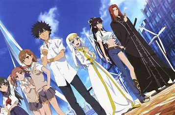

AllTheAnime
acceleratorAnime
indexAnime
RailgunAnime
soloLeveling
A Certain Magical index is an anime that shere the same world as the other anime in this website but solo leveling.
Click to see Touma fight.
Click to learn Lore of A Certain Magical index.
Click to learn about Touma.

Click to see touma fight2.